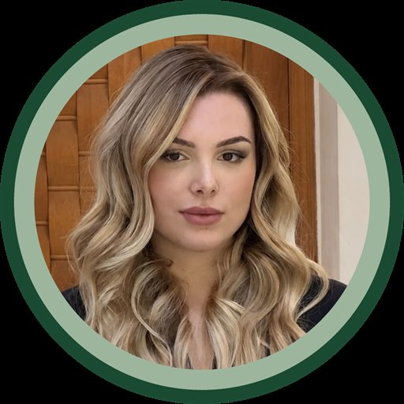
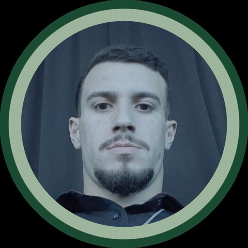

Diagnóstico Organizacional
- Pesquisa de clima organizacional
- Diagnóstico de QVT
- Avaliação de riscos psicossociais
- Engajamento, liderança e comunicação interna
Pessoas · Equilíbrio · Resultados
A Balance Consultoria ajuda empresas a construir ambientes de trabalho mais saudáveis, com diagnóstico, planejamento e implementação de programas de Qualidade de Vida no Trabalho (QVT).
Equilíbrio entre o bem-estar dos colaboradores e os objetivos da organização: menos absenteísmo e rotatividade, mais engajamento e produtividade.

A Balance Consultoria nasceu para transformar ambientes de trabalho por meio de diagnósticos, estratégias e soluções personalizadas em bem-estar e qualidade de vida no trabalho. Acreditamos que o equilíbrio entre o bem-estar das pessoas e o desempenho das empresas é o caminho para uma cultura corporativa mais humana, saudável e sustentável.
Nossa visão é ser referência nacional em QVT, reconhecida pela excelência técnica, inovação e ética, construindo relacionamentos duradouros e resultados que perduram.
Nossos valores
Valorização das pessoasÉtica e transparênciaExcelênciaInovaçãoCompromisso com resultadosEmpatiaSustentabilidade organizacionalAprendizado contínuo
Acompanhamos a empresa em todo o ciclo: do diagnóstico da realidade organizacional ao monitoramento dos resultados.
Os serviços são descritos em texto e também apresentados em vídeo, podcast e imagens.
Em breve, o vídeo institucional de apresentação da Balance.
Conversas sobre QVT. Em breve, o episódio sobre saúde mental e equilíbrio no trabalho.
Em breve, registros de workshops, semanas temáticas e materiais dos serviços.
Cuidar das pessoas também é uma estratégia de negócio.
Ambientes de trabalho mais saudáveis e equilibrados geram pessoas mais engajadas e empresas mais fortes.
Nosso instrumento combina dois modelos consagrados da literatura de QVT. O primeiro avalia as condições objetivas do trabalho; o segundo, o bem-estar percebido pelos colaboradores.
Modelo 01
Oito critérios para avaliar a organização:
Modelo 02
Quatro dimensões do bem-estar do colaborador:
Para a autora, QVT é uma competência de gestão estratégica, não um conjunto de benefícios isolados.
Foto, mini currículo e competências de cada sócio. Cinco profissionais com atuação complementar em gestão, finanças, recursos humanos e marcas.
Diretor-Geral
Mini currículo
Lidera a estratégia da consultoria e conduz a relação com os clientes, com foco na gestão de pessoas e processos.
Competências
Gerente Administrativo-Financeiro
Mini currículo
Responsável pela saúde financeira e pela organização administrativa que sustentam a operação.
Competências

Gerente de Recursos Humanos
Mini currículo
Conduz os diagnósticos de clima e os programas de desenvolvimento das equipes dos clientes.
Competências

Consultor de RH
Mini currículo
Apoia a execução dos projetos, dos treinamentos e dos processos de RH nas empresas atendidas.
Competências
Gerente de Marketing e Relacionamento
Mini currículo
Cuida da comunicação, do relacionamento com os clientes e do fortalecimento da marca Balance.
Competências
Canais de acesso do cliente e respostas às perguntas mais frequentes.
Fale com a equipe da Balance para solicitar um diagnóstico ou tirar dúvidas.
(11) 00000-0000
Segunda a sexta, das 9h às 18h, presencial ou online.
É um campo de estudo e de gestão que busca melhorar a relação entre o indivíduo, o trabalho e a organização, olhando além do salário para as condições físicas, psicológicas, sociais e organizacionais do ambiente de trabalho.
Pelo diagnóstico. Avaliamos o clima, os riscos psicossociais, o engajamento e a liderança, e só depois propomos um plano de ação personalizado.
Sim. Adaptamos os serviços ao porte, ao segmento e à cultura de cada cliente.
Por indicadores definidos junto à empresa, como absenteísmo, rotatividade, engajamento e satisfação, acompanhados em relatórios gerenciais e reavaliações periódicas.
Sim. Acompanhamos a execução das ações, de campanhas de bem-estar a programas de prevenção do burnout, e ajustamos o plano sempre que necessário.
Sim. A confidencialidade é parte do nosso valor de Ética e Transparência: os resultados são apresentados de forma consolidada.
Pelos canais de acesso acima. Respondemos para agendar uma conversa inicial.
Promover a transformação dos ambientes organizacionais por meio de consultorias especializadas em Qualidade de Vida no Trabalho, com diagnósticos, estratégias e soluções personalizadas que equilibram o bem-estar dos colaboradores e o desempenho das empresas.
Ser referência nacional em QVT, reconhecida pela excelência técnica, inovação e ética, construindo relacionamentos duradouros e resultados que perduram.
Respeito, desenvolvimento humano, inclusão e bem-estar em todas as soluções.
Integridade, responsabilidade e confidencialidade em cada projeto.
Metodologias reconhecidas e melhoria contínua para resultados consistentes.
Busca permanente por novas práticas, adaptadas à realidade de cada cliente.
Objetivos claros e indicadores de desempenho em cada projeto.
Trabalho próximo ao cliente, ouvindo suas necessidades.
Desempenho econômico, responsabilidade social e qualidade de vida.
Atualização constante da equipe em gestão de pessoas e bem-estar.
Balance Consultoria
Conheça as soluções da Balance Consultoria.
Entre em contato